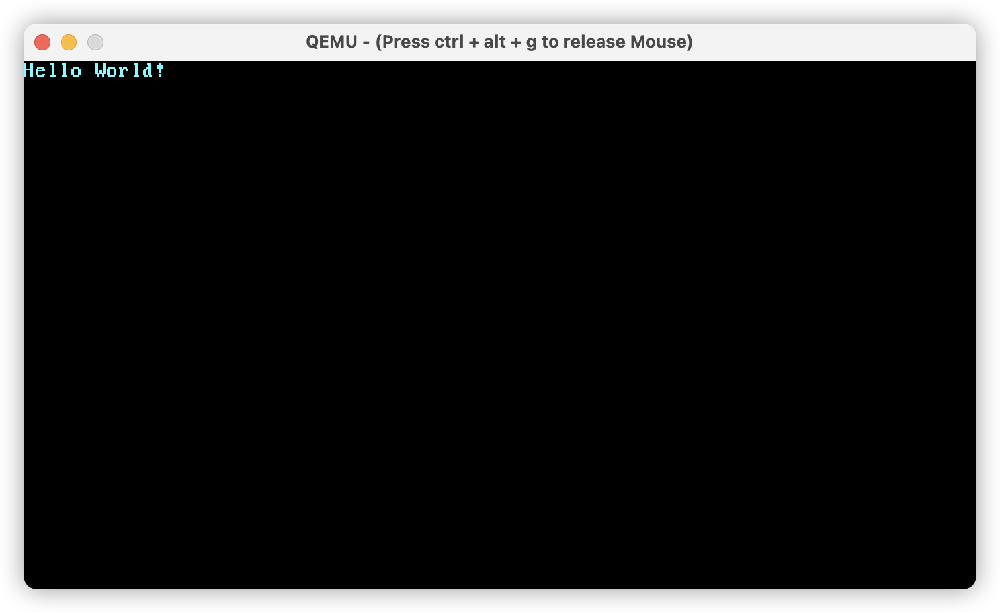

- 00 开篇词 让Rust成为你的下一门主力语言.md
- 01 内存：值放堆上还是放栈上，这是一个问题.md
- 02 串讲：编程开发中，那些你需要掌握的基本概念.md
- 03 初窥门径：从你的第一个Rust程序开始！.md
- 04 get hands dirty：来写个实用的CLI小工具.md
- 05 get hands dirty：做一个图片服务器有多难？.md
- 06 get hands dirty：SQL查询工具怎么一鱼多吃？.md
- 07 所有权：值的生杀大权到底在谁手上？.md
- 08 所有权：值的借用是如何工作的？.md
- 09 所有权：一个值可以有多个所有者么？.md
- 10 生命周期：你创建的值究竟能活多久？.md
- 11 内存管理：从创建到消亡，值都经历了什么？.md
- 12 类型系统：Rust的类型系统有什么特点？.md
- 13 类型系统：如何使用trait来定义接口？.md
- 14 类型系统：有哪些必须掌握的trait？.md
- 15 数据结构：这些浓眉大眼的结构竟然都是智能指针？.md
- 16 数据结构：Vec_T_、&[T]、Box_[T]_ ，你真的了解集合容器么？.md
- 17 数据结构：软件系统核心部件哈希表，内存如何布局？.md
- 18 错误处理：为什么Rust的错误处理与众不同？.md
- 19 闭包：FnOnce、FnMut和Fn，为什么有这么多类型？.md
- 20 4 Steps ：如何更好地阅读Rust源码？.md
- 21 阶段实操（1）：构建一个简单的KV server-基本流程.md
- 22 阶段实操（2）：构建一个简单的KV server-基本流程.md
- 23 类型系统：如何在实战中使用泛型编程？.md
- 24 类型系统：如何在实战中使用trait object？.md
- 25 类型系统：如何围绕trait来设计和架构系统？.md
- 26 阶段实操（3）：构建一个简单的KV server-高级trait技巧.md
- 27 生态系统：有哪些常有的Rust库可以为我所用？.md
- 28 网络开发（上）：如何使用Rust处理网络请求？.md
- 29 网络开发（下）：如何使用Rust处理网络请求？.md
- 30 Unsafe Rust：如何用C++的方式打开Rust？.md
- 31 FFI：Rust如何和你的语言架起沟通桥梁？.md
- 32 实操项目：使用PyO3开发Python3模块.md
- 33 并发处理（上）：从atomics到Channel，Rust都提供了什么工具？.md
- 34 并发处理（下）：从atomics到Channel，Rust都提供了什么工具？.md
- 35 实操项目：如何实现一个基本的MPSC channel？.md
- 36 阶段实操（4）：构建一个简单的KV server-网络处理.md
- 37 阶段实操（5）：构建一个简单的KV server-网络安全.md
- 38 异步处理：Future是什么？它和async_await是什么关系？.md
- 39 异步处理：async_await内部是怎么实现的？.md
- 40 异步处理：如何处理异步IO？.md
- 41 阶段实操（6）：构建一个简单的KV server-异步处理.md
- 42 阶段实操（7）：构建一个简单的KV server-如何做大的重构？.md
- 43 生产环境：真实世界下的一个Rust项目包含哪些要素？.md
- 44 数据处理：应用程序和数据如何打交道？.md
- 45 阶段实操（8）：构建一个简单的KV server-配置_测试_监控_CI_CD.md
- 46 软件架构：如何用Rust架构复杂系统？.md
- 加餐 Rust2021版次问世了！.md
- 加餐 代码即数据：为什么我们需要宏编程能力？.md
- 加餐 宏编程（上）：用最“笨”的方式撰写宏.md
- 加餐 宏编程（下）：用 syn_quote 优雅地构建宏.md
- 加餐 愚昧之巅：你的Rust学习常见问题汇总.md
- 加餐 期中测试：参考实现讲解.md
- 加餐 期中测试：来写一个简单的grep命令行.md
- 加餐 这个专栏你可以怎么学，以及Rust是否值得学？.md
- 大咖助场 开悟之坡（上）：Rust的现状、机遇与挑战.md
- 大咖助场 开悟之坡（下）：Rust的现状、机遇与挑战.md
- 特别策划 学习锦囊（一）：听听课代表们怎么说.md
- 特别策划 学习锦囊（三）：听听课代表们怎么说.md
- 特别策划 学习锦囊（二）：听听课代表们怎么说.md
- 用户故事 绝望之谷：改变从学习开始.md
- 用户故事 语言不仅是工具，还是思维方式.md
- 结束语 永续之原：Rust学习，如何持续精进？.md
用户故事 语言不仅是工具，还是思维方式
你好，我是 Pedro，一名普普通通打工人，平平凡凡小码农。
可能你在课程留言区看到过我，也跟我讨论过问题。今天借着这篇用户故事的机会，正好能跟你再多聊几句。
我简单整理了一下自己入坑编程以来的一些思考，主要会从思维、语言和工具三个方面来聊一聊，最后也给你分享一点自己对 Rust 的看法，当然以下观点都是“主观”的，观点本身不重要，重要的是得到观点的过程。
从思维谈起
从接触编程开始，我们就已经开始与编程语言打交道，很多人学习编程的道路往往就是熟悉编程语言的过程。
在这个过程中，很多人会不适应，写出的代码往往都不能运行，更别提设计与抽象。出现这个现象最根本的原因是，代码体现的是计算机思维，而人脑思维和计算机思维差异巨大，很多人一开始无法接受两种思维差异带来的巨大冲击。
那么，究竟什么是计算机思维？
计算机思维是全方位的，体现在方方面面，我以个人视角来简单概括一下：
- 自顶向下：自顶向下是计算机思维的精髓，人脑更加适合自底向上。计算机通过自顶向下思维将大而难的问题拆解为小问题，再将小问题逐一解决，从而最终解决大问题。
- 多维度、多任务：人脑是线性的，看问题往往是单维的，我们很难同时处理和思考多个问题，但是计算机不一样，它可以有多个 CPU 核心，在保存上下文的基础上能够并发运行成百上千的任务。
- 全局性：人的精力、脑容量是有限的，而计算机的容量几乎是无限的；人在思考问题时，限于自己的局部性，拿到局部解就开始做了，而计算机可以在海量数据的基础上再做决策，从而逼近全局最优。
- 协作性：计算机本身就是一件极其精细化的工程艺术品，它复杂精巧，每个部分都只会做自己最擅长的事情，比如将计算和存储剥离，计算机高效运作的背后是每个部分协作的结果，而人更擅长单体作战，只有通过大量的训练，才能发挥群体的作用。
- 迭代快：人类进化、成长是缓慢的，直到现在，很多人的思维方式仍旧停留在上个世纪，而计算机则不同，进入信息时代后，计算机就遵循着摩尔定律，每 18 个月翻一番，十年前的手机放在今天可能连微信都无法正常运行。
- 取舍：在长期的社会发展中，人过分喜欢强调对与错，喜欢追求绝对的公平，讽刺的是，由二进制组成的计算机却不会做出非黑即白的决策，无论是计算机本身(硬件)，还是里面运行的软件，每一个部分都是性能、成本、易用性多角度权衡的结果。
- So on…
当这些思维直接体现在代码里面，比如，自顶向下体现在编程语言中就是递归、分治；多维度、多任务的体现就是分支、跳转、上下文；迭代、协作和取舍在编程中也处处可见。
而这些恰恰是人脑思维不擅长的点，所以很多人无法短时间内做到编程入门。想要熟练掌握编程，就必须认识到人脑与计算机思维的差异，强化计算机思维的训练，这个训练的过程是不太可能短暂的，因此编程入门必须要消耗大量的时间和精力。
语言
不过思维的训练和评估是需要有载体的，就好比评估你的英文水平，会考察你用英文听/说/读/写的表达能力。那我们的计算机思维怎么表达呢？
于人而言，我们可以通过肢体动作、神情、声音、文字等来表达思维。在漫长的人类史中，动作、神情、声音这几种载体很难传承和传播，直到近代，音、视频的兴起才开始慢慢解决这个问题。
文字，尤其是语言诞生后的文字，成了人类文明延续、发展的主要途径之一，直至今天，我们仍然可以通过文字来与先贤对话。当然，对话的前提是，这些文字你得看得懂。
而看得懂的前提是，我们使用了同一种或类似的语言。
回到计算机上来，现代计算机也是有通用语言的，也就是我们常说的二进制机器语言，专业一点叫指令集。二进制是计算机的灵魂，但是人类却很难理解、记忆和应用，因此为了辅助人类操纵计算机工作，上一代程序员们对机器语言做了第一次抽象，发明了汇编语言。
但伴随着硬件、软件的快速发展，程序代码越来越长，应用变得愈来愈庞大，汇编级别的抽象已经无法满足工程师对快速高效工作的需求了。历史的发展总是如此地相似，当发现语言抽象已经无法满足工作时，工程师们就会在原有层的基础上再抽象出一层，而这一层的著名佼佼者——C语言直接奠定了今天计算机系统的基石。
从此以后，不计其数的编程语言走向计算机的舞台，它们如同满天繁星，吸引了无数的编程爱好者，比如说迈向中年的 Java 和新生代的 Julia。虽然学习计算机最正确的途径不是从语言开始，但学习编程最好、最容易获取成就感的路径确实是应该从语言入手。因此编程语言的重要性不言而喻，它是我们走向编程世界的大门。
C 语言是一种命令式编程语言，命令式是一种编程范式；使用 C 写代码时，我们更多是在思考如何描述程序的运行，通过编程语言来告诉计算机如何执行。
举个例子，使用 C 语言来筛选出一个数组中大于 100 的数字。对应代码如下：
int main() {
int arr[5] = { 100, 105, 110, 99, 0 };
for (int i = 0; i < 5; ++i) {
if (arr[i] > 100) {
// do something
}
}
return 0;
}
在这个例子中，代码撰写者需要使用数组、循环、分支判断等逻辑来告诉计算机如何去筛选数字，写代码的过程往往就是计算机的执行过程。
而对于另一种语言而言，比如 JavaScript，筛选出大于 100 的数字的代码大概是这样的：
let arr = [ 100, 105, 110, 99, 0 ]
let result = arr.filter(n => n > 100)
相较于 C 来说，JavaScript 做出了更加高级的抽象，代码撰写者无需关心数组容量、数组遍历，只需将数字丢进容器里面，并在合适的地方加上筛选函数即可，这种编程方式被称为声明式编程。
可以看到的是，相较于命令式编程，声明式编程更倾向于表达在解决问题时应该做什么，而不是具体怎么做。这种更高级的抽象不仅能够给开发者带来更加良好的体验，也能让更多非专业人士进入编程这个领域。
不过命令式编程和声明式编程其实并没有优劣之分，主要区别体现在两者的语言特性相较于计算机指令集的抽象程度。
其中，命令式编程语言的抽象程度更低，这意味着该类语言的语法结构可以直接由相应的机器指令来实现，适合对性能极度敏感的场景。而声明式编程语言的抽象程度更高，这类语言更倾向于以叙事的方式来描述程序逻辑，开发者无需关心语言背后在机器指令层面的实现细节，适合于业务快速迭代的场景。
不过语言不是一成不变的。编程语言一直在进化，它的进化速度绝对超过了自然语言的进化速度。
在抽象层面上，编程语言一直都停留在机器码 -> 汇编 -> 高级语言这三层上。而对于我们广大开发者来说，我们的目光一直聚焦在高级语言这一层上，所以，高级编程语言也慢慢成为了狭隘的编程语言（当然，这是一件好事，每一类人都应该各司其职做好自己的事情，不用过多担心指令架构、指令集差异带来的麻烦）。
谈到这里，不知你是否发现了一个规律：抽象越低的编程语言越接近计算机思维，而抽象越高越接近人脑思维。
是的。现代层出不穷的编程语言，往往都是在人脑、计算机思维之间的平衡做取舍。那些设计语言的专家们似乎在这个毫无硝烟的战场上博弈，彼此对立却又彼此借鉴。不过哪怕再博弈，按照人类自然语言的趋势来看，也几乎不可能出现一家独大的可能，就像人类目前也是汉语、英语等多种语言共存，即使世界语于 1887 年就被发明，但我们似乎从未见过谁说世界语。
既然高级编程语言那么多，对于有选择困难症的我们，又该做出何种选择呢？
工具
一提到选语言，估计你常听这么一句话，语言是工具。很长一段时间里，我也这么告诫自己，无所谓一门语言的优劣，它仅仅只是一门工具，而我需要做的就是将这门工具用好。语言是表达思想的载体，只要有了思想，无论是何种语言，都能表达。
可当我接触了越来越多的编程语言，对代码、指令、抽象有了更深入的理解之后，我推翻了这个想法，认识到了“语言只是工具”这个说法的狭隘性。
编程语言，显然不仅只是工具，它一定程度上桎梏了我们的思维。
举例来说，使用 Java 或者 C# 的人能够很轻易地想到对象的设计与封装，那是因为 Java 和 C# 就是以类作为基本的组织单位，无论你是否有意识地去做这件事，你都已经做了。而对于 C 和 JavaScript 的使用者来说，大家似乎更倾向于使用函数来进行封装。
抛开语言本身的优劣，这是一种思维的惯性，恰恰也印证了上面我谈到的，语言一定程度上桎梏了我们的思维。其实如果从人类语言的角度出发，一个人说中文和说英文的思维方式是大相径庭的，甚至一个人分别说方言和普通话给别人的感觉也像是两个人一样。
Rust
所以如果说思维是我们创造的出发点，那么编程语言，在表达思维的同时，也在一定程度上桎梏了我们的思维。聊到这里，终于到我们今天的主角——Rust这门编程语言出场了。
Rust 是什么？
Rust 是一门高度抽象、性能与安全并重的现代化高级编程语言。我学习、推崇它的主要原因有三点：
- 高度抽象、表达能力强，支持命令式、声明式、元编程、范型等多种编程范式；
- 强大的工程能力，安全与性能并重；
- 良好的底层能力，天然适合内核、数据库、网络。
Rust 很好地迎合了人类思维，对指令集进行了高度抽象，抽象后的表达力能让我们以更接近人类思维的视角去写代码，而 Rust 负责将我们的思维翻译为计算机语言，并且性能和安全得到了极大的保证。简单说就是，完美兼顾了一门语言的思想性和工具性。
仍以前面“选出一个数组中大于 100 的数字”为例，如果使用 Rust，那么代码是这样的：
let arr = vec![ 100, 105, 110, 99, 0 ]
let result = arr.iter().filter(n => n > 100).collect();
如此简洁的代码会不会带来性能损耗，Rust 的答案是不会，甚至可以比 C 做到更快。
我们对应看三个小例子的实现思路/要点，来感受一下 Rust 的语言表达能力、工程能力和底层能力。
简单协程
Rust 可以无缝衔接到 C、汇编代码，这样我们就可以跟下层的硬件打交道从而实现协程。
实现也很清晰。首先，定义出协程的上下文：
#[derive(Debug, Default)]
#[repr(C)]
struct Context {
rsp: u64, // rsp 寄存器
r15: u64,
r14: u64,
r13: u64,
r12: u64,
rbx: u64,
rbp: u64,
}
#[naked]
unsafe fn ctx_switch() {
// 注意：16 进制
llvm_asm!(
"
mov %rsp, 0x00(%rdi)
mov %r15, 0x08(%rdi)
mov %r14, 0x10(%rdi)
mov %r13, 0x18(%rdi)
mov %r12, 0x20(%rdi)
mov %rbx, 0x28(%rdi)
mov %rbp, 0x30(%rdi)
mov 0x00(%rsi), %rsp
mov 0x08(%rsi), %r15
mov 0x10(%rsi), %r14
mov 0x18(%rsi), %r13
mov 0x20(%rsi), %r12
mov 0x28(%rsi), %rbx
mov 0x30(%rsi), %rbp
"
);
}
结构体 Context 保存了协程的运行上下文信息(寄存器数据)，通过函数 ctx_switch，当前协程就可以交出 CPU 使用权，下一个协程接管 CPU 并进入执行流。
然后我们给出协程的定义：
#[derive(Debug)]
struct Routine {
id: usize,
stack: Vec<u8>,
state: State,
ctx: Context,
}
协程 Routine 有自己唯一的 id、栈 stack、状态 state，以及上下文 ctx。Routine 通过 spawn 函数创建一个就绪协程，yield 函数会交出 CPU 执行权：
pub fn spawn(&mut self, f: fn()) {
// 找到一个可用的
// let avaliable = ....
let sz = avaliable.stack.len();
unsafe {
let stack_bottom = avaliable.stack.as_mut_ptr().offset(sz as isize); // 高地址内存是栈顶
let stack_aligned = (stack_bottom as usize & !15) as *mut u8;
std::ptr::write(stack_aligned.offset(-16) as *mut u64, guard as u64);
std::ptr::write(stack_aligned.offset(-24) as *mut u64, hello as u64);
std::ptr::write(stack_aligned.offset(-32) as *mut u64, f as u64);
avaliable.ctx.rsp = stack_aligned.offset(-32) as u64; // 16 字节对齐
}
avaliable.state = State::Ready;
}
pub fn r#yield(&mut self) -> bool {
// 找到一个 ready 的，然后让其运行
let mut pos = self.current;
//.....
self.routines[pos].state = State::Running;
let old_pos = self.current;
self.current = pos;
unsafe {
let old: *mut Context = &mut self.routines[old_pos].ctx;
let new: *const Context = &self.routines[pos].ctx;
llvm_asm!(
"mov $0, %rdi
mov $1, %rsi"::"r"(old), "r"(new)
);
ctx_switch();
}
self.routines.len() > 0
}
运行结果如下：
1 STARTING
routine: 1 counter: 0
2 STARTING
routine: 2 counter: 0
routine: 1 counter: 1
routine: 2 counter: 1
routine: 1 counter: 2
routine: 2 counter: 2
routine: 1 counter: 3
routine: 2 counter: 3
routine: 1 counter: 4
routine: 2 counter: 4
routine: 1 counter: 5
routine: 2 counter: 5
routine: 1 counter: 6
routine: 2 counter: 6
routine: 1 counter: 7
routine: 2 counter: 7
routine: 1 counter: 8
routine: 2 counter: 8
routine: 1 counter: 9
routine: 2 counter: 9
1 FINISHED
具体代码实现参考协程 。
简单内核
操作系统内核是一个极为庞大的工程，但是如果只是写个简单内核输出 Hello World，那么 Rust 就能很快完成这个任务。你可以自己体验一下。
首先，添加依赖工具：
rustup component add llvm-tools-preview
cargo install bootimage
然后编辑 main.rs 文件输出一个 Hello World：
#![no_std]
#![no_main]
use core::panic::PanicInfo;
static HELLO:&[u8] = b"Hello World!";
#[no_mangle]
pub extern "C" fn _start() -> ! {
let vga_buffer = 0xb8000 as *mut u8;
for (i, &byte) in HELLO.iter().enumerate() {
unsafe {
*vga_buffer.offset(i as isize * 2) = byte;
*vga_buffer.offset(i as isize * 2 + 1) = 0xb;
}
}
loop{}
}
#[panic_handler]
fn panic(_info: &PanicInfo) -> ! {
loop {}
}
然后编译、打包运行：
cargo bootimage
cargo run
运行结果如下：- 
具体代码实现参考内核 。
简单网络协议栈
同操作系统一样，网络协议栈也是一个庞大的工程系统。但是借助 Rust 和其完备的生态，我们可以迅速完成一个小巧的 HTTP 协议栈。
首先，在数据链路层，我们定义 Mac 地址结构体：
#[derive(Debug)]
pub struct MacAddress([u8; 6]);
impl MacAddress {
pub fn new() -> MacAddress {
let mut octets: [u8; 6] = [0; 6];
rand::thread_rng().fill_bytes(&mut octets); // 1. 随机生成
octets[0] |= 0b_0000_0010; // 2
octets[1] &= 0b_1111_1110; // 3
MacAddress { 0: octets }
}
}
MacAddress 用来表示网卡的物理地址，此处的 new 函数通过随机数来生成随机的物理地址。
然后实现 DNS 域名解析函数，通过 IP 地址获取 MAC 地址，如下：
pub fn resolve(
dns_server_address: &str,
domain_name: &str,
) -> Result<Option<std::net::IpAddr>, Box<dyn Error>> {
let domain_name = Name::from_ascii(domain_name).map_err(DnsError::ParseDomainName)?;
let dns_server_address = format!("{}:53", dns_server_address);
let dns_server: SocketAddr = dns_server_address
.parse()
.map_err(DnsError::ParseDnsServerAddress)?;
// ....
let mut encoder = BinEncoder::new(&mut request_buffer);
request.emit(&mut encoder).map_err(DnsError::Encoding)?;
let _n_bytes_sent = localhost
.send_to(&request_buffer, dns_server)
.map_err(DnsError::Sending)?;
loop {
let (_b_bytes_recv, remote_port) = localhost
.recv_from(&mut response_buffer)
.map_err(DnsError::Receiving)?;
if remote_port == dns_server {
break;
}
}
let response = Message::from_vec(&response_buffer).map_err(DnsError::Decoding)?;
for answer in response.answers() {
if answer.record_type() == RecordType::A {
let resource = answer.rdata();
let server_ip = resource.to_ip_addr().expect("invalid IP address received");
return Ok(Some(server_ip));
}
}
Ok(None)
}
接着实现 HTTP 协议的 GET 方法：
pub fn get(
tap: TapInterface,
mac: EthernetAddress,
addr: IpAddr,
url: Url,
) -> Result<(), UpstreamError> {
let domain_name = url.host_str().ok_or(UpstreamError::InvalidUrl)?;
let neighbor_cache = NeighborCache::new(BTreeMap::new());
// TCP 缓冲区
let tcp_rx_buffer = TcpSocketBuffer::new(vec![0; 1024]);
let tcp_tx_buffer = TcpSocketBuffer::new(vec![0; 1024]);
let tcp_socket = TcpSocket::new(tcp_rx_buffer, tcp_tx_buffer);
let ip_addrs = [IpCidr::new(IpAddress::v4(192, 168, 42, 1), 24)];
let fd = tap.as_raw_fd();
let mut routes = Routes::new(BTreeMap::new());
let default_gateway = Ipv4Address::new(192, 168, 42, 100);
routes.add_default_ipv4_route(default_gateway).unwrap();
let mut iface = EthernetInterfaceBuilder::new(tap)
.ethernet_addr(mac)
.neighbor_cache(neighbor_cache)
.ip_addrs(ip_addrs)
.routes(routes)
.finalize();
let mut sockets = SocketSet::new(vec![]);
let tcp_handle = sockets.add(tcp_socket);
// HTTP 请求
let http_header = format!(
"GET {} HTTP/1.0\r\nHost: {}\r\nConnection: close\r\n\r\n",
url.path(),
domain_name,
);
let mut state = HttpState::Connect;
'http: loop {
let timestamp = Instant::now();
match iface.poll(&mut sockets, timestamp) {
Ok(_) => {}
Err(smoltcp::Error::Unrecognized) => {}
Err(e) => {
eprintln!("error: {:?}", e);
}
}
{
let mut socket = sockets.get::<TcpSocket>(tcp_handle);
state = match state {
HttpState::Connect if !socket.is_active() => {
eprintln!("connecting");
socket.connect((addr, 80), random_port())?;
HttpState::Request
}
HttpState::Request if socket.may_send() => {
eprintln!("sending request");
socket.send_slice(http_header.as_ref())?;
HttpState::Response
}
HttpState::Response if socket.can_recv() => {
socket.recv(|raw_data| {
let output = String::from_utf8_lossy(raw_data);
println!("{}", output);
(raw_data.len(), ())
})?;
HttpState::Response
}
HttpState::Response if !socket.may_recv() => {
eprintln!("received complete response");
break 'http;
}
_ => state,
}
}
phy_wait(fd, iface.poll_delay(&sockets, timestamp)).expect("wait error");
}
Ok(())
}
最后在 main 函数中使用 HTTP GET 方法：
fn main() {
// ...
let tap = TapInterface::new(&tap_text).expect(
"error: unable to use <tap-device> as a \
network interface",
);
let domain_name = url.host_str().expect("domain name required");
let _dns_server: std::net::Ipv4Addr = dns_server_text.parse().expect(
"error: unable to parse <dns-server> as an \
IPv4 address",
);
let addr = dns::resolve(dns_server_text, domain_name).unwrap().unwrap();
let mac = ethernet::MacAddress::new().into();
http::get(tap, mac, addr, url).unwrap();
}
运行程序，结果如下：
$ ./target/debug/rget http://www.baidu.com tap-rust
HTTP/1.0 200 OK
Accept-Ranges: bytes
Cache-Control: no-cache
Content-Length: 9508
Content-Type: text/html
具体代码实现参考协议栈 。
通过这三个简单的小例子，无论是协程、内核还是协议栈，这些听上去都很高大上的技术，在 Rust 强大的表现力、生态和底层能力面前显得如此简单和方便。
思维是出发点，语言是表达体，工具是媒介，而 Rust 完美兼顾了一门语言的思想性和工具性，赋予了我们极强的工程表达能力和完成能力。
总结
作为极其现代的语言，Rust 集百家之长而成，将性能、安全、语言表达力都做到了极致，但同时也带来了巨大的学习曲线。
初学时，每天都要和编译器做斗争，每次编译都是满屏的错误信息；攻克一个陡坡后，发现后面有更大的陡坡，学习的道路似乎无穷无尽。那我们为什么要学习 Rust ？
这里引用左耳朵耗子的一句话：
如果你对 Rust 的概念认识得不完整，你完全写不出程序，那怕就是很简单的一段代码。这逼着程序员必须了解所有的概念才能编码。
Rust 是一个对开发者极其严格的语言，严格到你学的不扎实，就不能写程序，但这无疑也是一个巨大的机会，改掉你不好的编码习惯，锻炼你的思维，让你成为真正的大师。
聊到这里，你是否已经对 Rust 有了更深的认识和更多的激情，那么放手去做吧！期待你与 Rust 擦出更加明亮的火花！
参考资料
- Writing an OS in Rust
- green-threads-explained-in-200-lines-of-rust
- https://github.com/PedroGao/rust-examples
- 《深入理解计算机系统》
- 《Rust in Action》
- 《硅谷来信》
- 《浪潮之巅》
© 2019 - 2023 Liangliang Lee. Powered by Vert.x and hexo-theme-book.